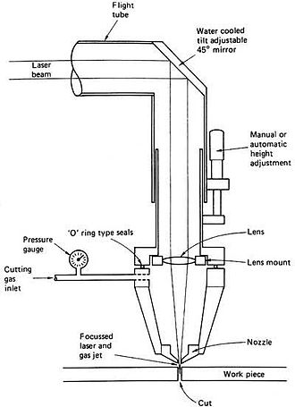

♦ Laser cutting works by directing the output of a high-powered laser, typically through optics, onto the material to be cut.
♦ The laser beam melts, burns, or vaporizes the material along the predetermined path, leaving a clean, precise edge.
♦ Laser cutting is widely used in manufacturing, fabrication, and various industries for cutting intricate shapes, patterns, or designs. Common applications include cutting parts for machinery, signage, jewelry, electronic components, architectural models, and custom fabrications.
♦ Laser cutting offers high precision and accuracy, allowing for intricate designs and tight tolerances. It can be used on a wide range of materials and thicknesses.
♦ Laser cutting involves the use of high-powered lasers, so safety precautions are essential to prevent eye injuries, skin burns, and fires. Proper ventilation and extraction systems are also necessary, especially when cutting materials that produce toxic fumes.
Here we have used Fusion-360 software to create our job!
Laser cutting is a technology that uses a laser to vaporize materials, resulting in a cut edge. While typically used for industrial manufacturing applications, it is now used by schools, small businesses, architecture, and hobbyists. Laser cutting works by directing the output of a high-power laser most commonly through optics. The laser optics and CNC (computer numerical control) are used to direct the laser beam to the material. A commercial laser for cutting materials uses a motion control system to follow a CNC or G-code of the pattern to be cut onto the material. The focused laser beam is directed at the material, which then either melts, burns, vaporizes away, or is blown away by a jet of gas,[1] leaving an edge with a high-quality surface finish .

♦ 2D LASER Cutting ♦
Here we have drawn the basic structure of cycle creating a continuous loop through out. Due to it's continuous loop the tracing of the cycle is appropriate. Then in the LASER Cutting machine we imported the file and then set the power, speed and the appropriate cutting area . After setting this we also fixed the origin and then also fixed the box in which the cycle was to be cut down. Hence on turning the LASER button on we are ready to cut our cycle. Lastly we just turned on the start option and the LASER cutting process started.
-Assignment 1-


This was how the LASER machine actually look-
.jpg)
♦ Press Fit Models ♦
Here we have created the outline of the object to be press fitted . We created it's basic outline using Fusion-360 software itself. We have created the basic format of HOUSE for our press fit model. We designed the model in such a way that it may contain some grooves to fit the exceeded part of the surface.
-Assignment 2-